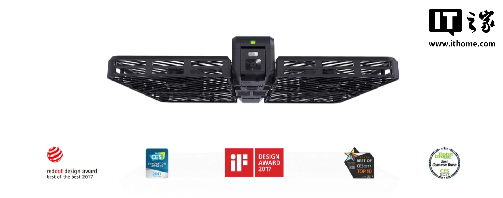
THE TECH EDIT
기술의 변화, 매일 한눈에.
카메라 · 스마트폰 · AI, 해외 테크 소식을 모아 전합니다.
최근 발행2026-10-29
새로 들어온 소식
LATEST STORIES
최신 뉴스
전체 3,987개 기사UMC, 2026년 3분기 웨이퍼 출하량 사상 최고치 기록, 매출 전년 동기 대비 25.6%, 전 분기 대비 8.0% 증가
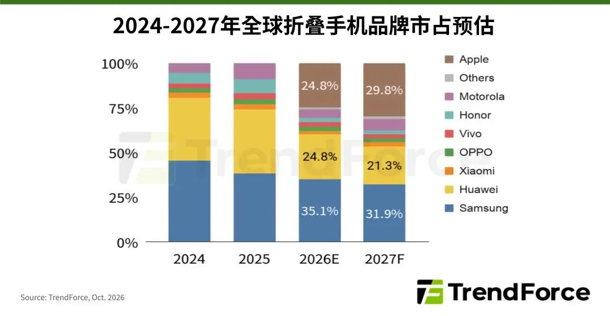
트렌드포스, 2026년 전 세계 폴더블 스마트폰 출하량 0.5% 소폭 증가, Apple iPhone Duo 약 24.8% 점유율 전망
Sony 네트워크 통신, 데이터베이스 해킹으로 약 258만 명의 사용자 피해 발생
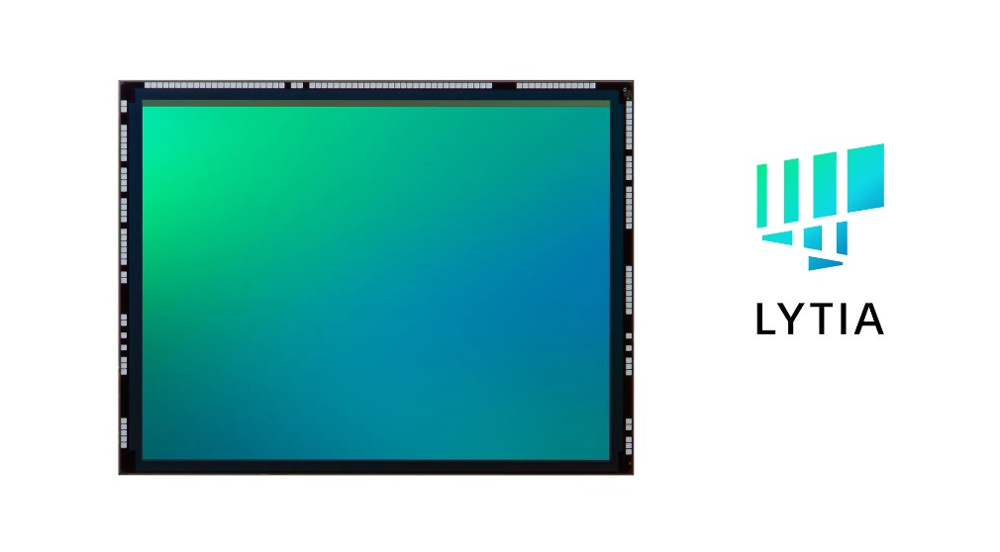
Sony LYTIA 720 50MP 센서, 100dB 다이내믹 레인지 및 4K 60fps HDR 비디오와 함께 출시
Solidigm, 미국에 450억 달러 규모 낸드(NAND) 팹 건설 계획
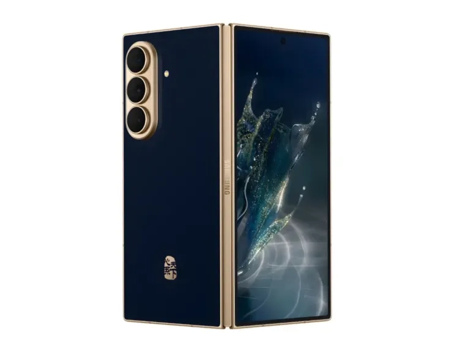
블루/레드 Samsung W27 심계천하 폴더블 스마트폰 렌더링 유출, 내일 공개
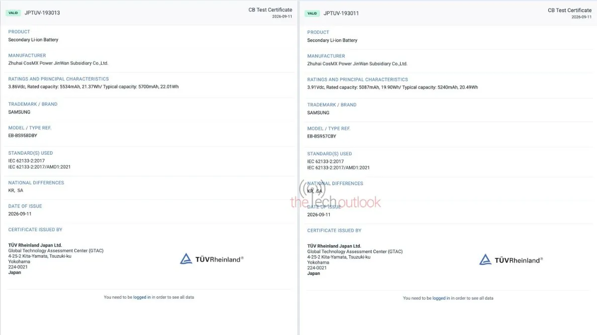
Samsung Galaxy S27 Pro/Ultra 스마트폰 배터리 용량 공개: 5240mAh/5700mAh
삼성 Galaxy A08 보급형 스마트폰, 6,000mAh 배터리 및 6년 업데이트 지원과 함께 인도 출시
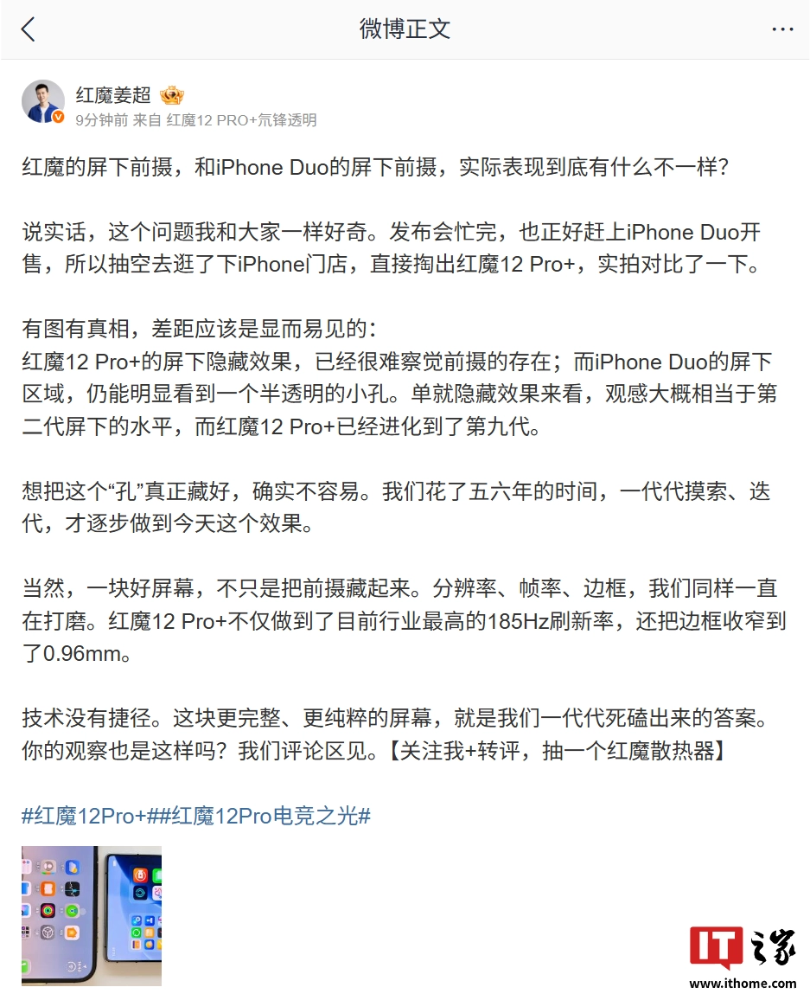
사진으로 보는 진실: 레드매직 12 Pro+와 아이폰 듀오의 디스플레이 내장 전면 카메라 실제 성능 차이, 그 격차는 명백하다
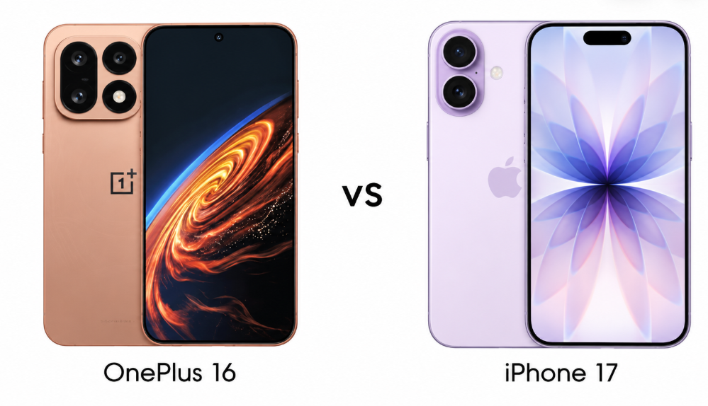
OnePlus 16 vs iPhone 17: 900달러 플래그십 스마트폰 대전, 생각보다 더 치열하다
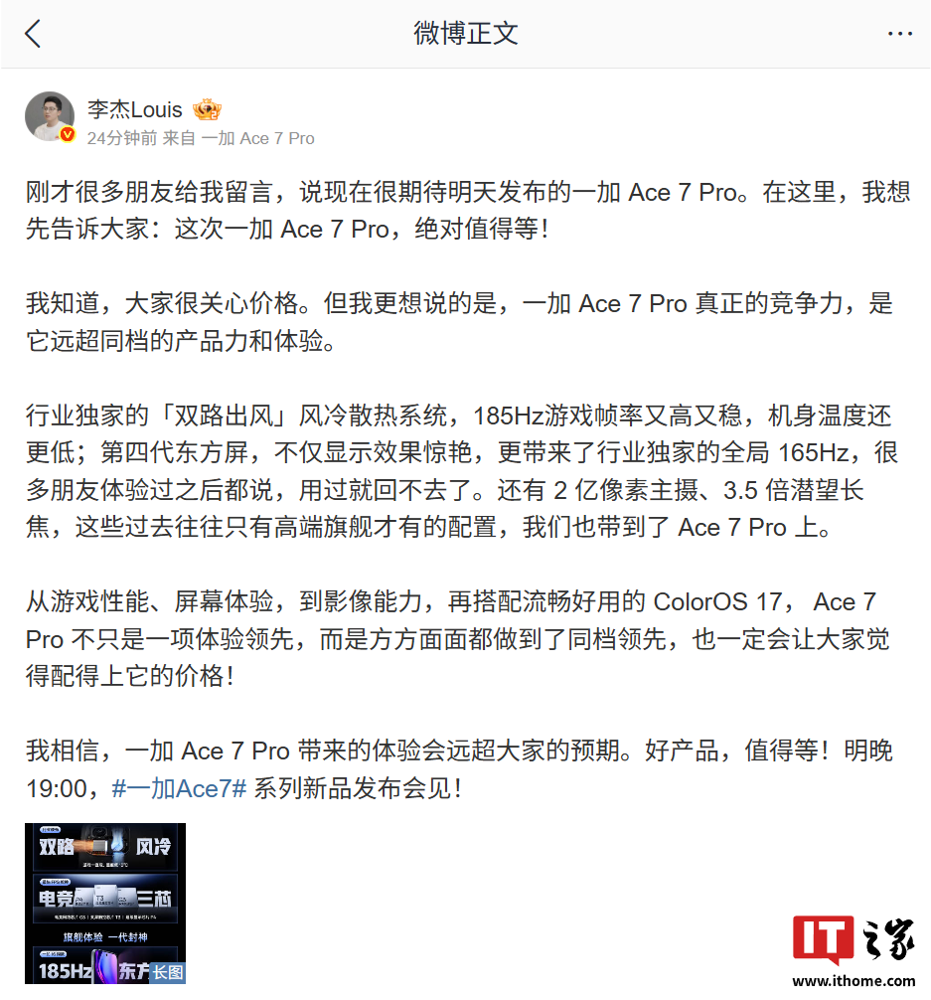
OnePlus Ace 7 시리즈 스마트폰 핵심 기능 공개: 5세대 스냅드래곤 8 엘리트, 게이밍 3칩, 185Hz 오리엔탈 스크린, 내일 밤 가격 공개
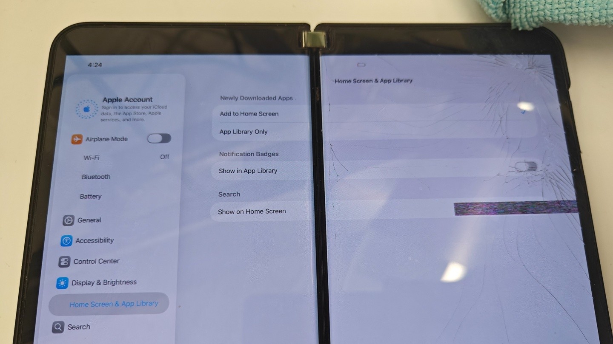
Microsoft Surface Duo 2, "Apple iPhone Duo"로 변신: iOS 26 기본 실행을 위한 길 열어, 듀얼 스크린 터치 사용 가능
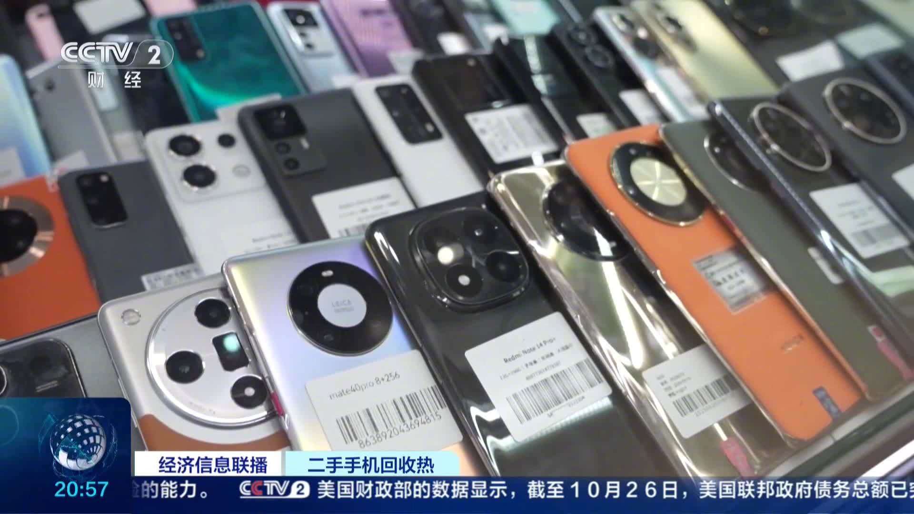
메모리 가격 인상으로 중고 스마트폰 가격 상승: 99% 새것 같은 중고 스마트폰이 화창베이에서 인기, Apple iPhone 15 Pro Max 작년 3,000위안대에서 4,300위안 이상으로 회복
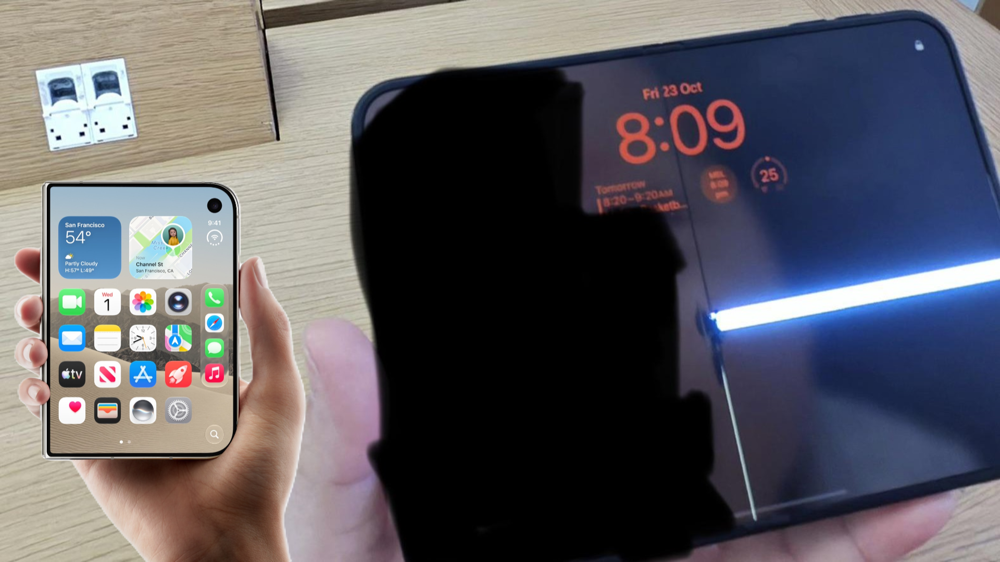
iPhone 듀오 힌지 공급업체, 디스플레이 고장 책임 부인
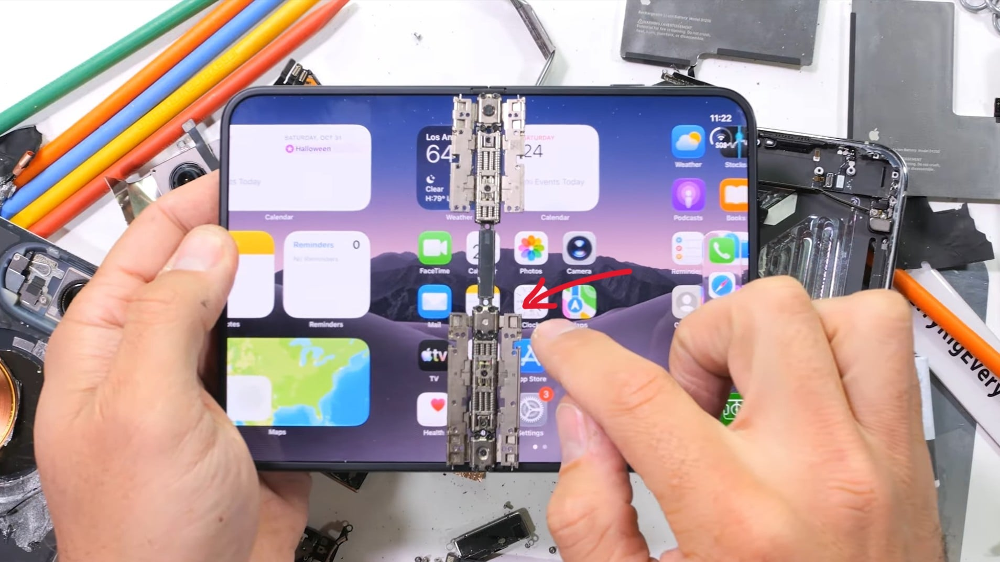
아이폰 듀오 내부 디스플레이 파손 원인을 클로즈업으로 보여주는 분해
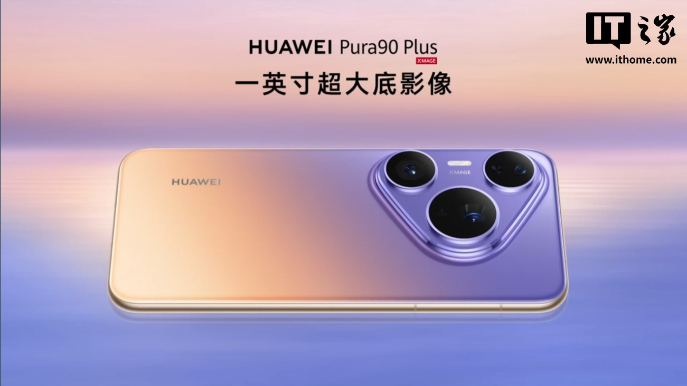
Huawei Pura90 Plus 스마트폰 출시: Kirin 9025 칩 최초 탑재, 5199위안부터 할인 판매
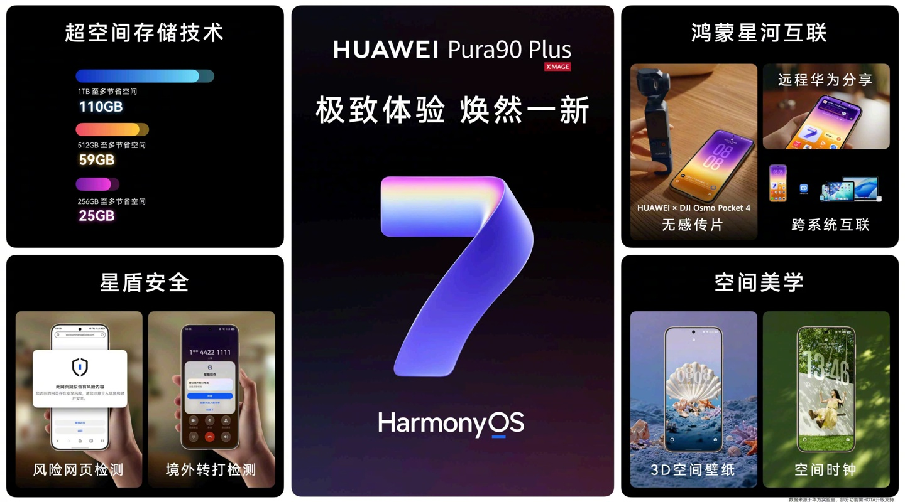
Huawei Pura90 시리즈 스마트폰, HarmonyOS 7으로 전면 업그레이드 및 신제품 출고
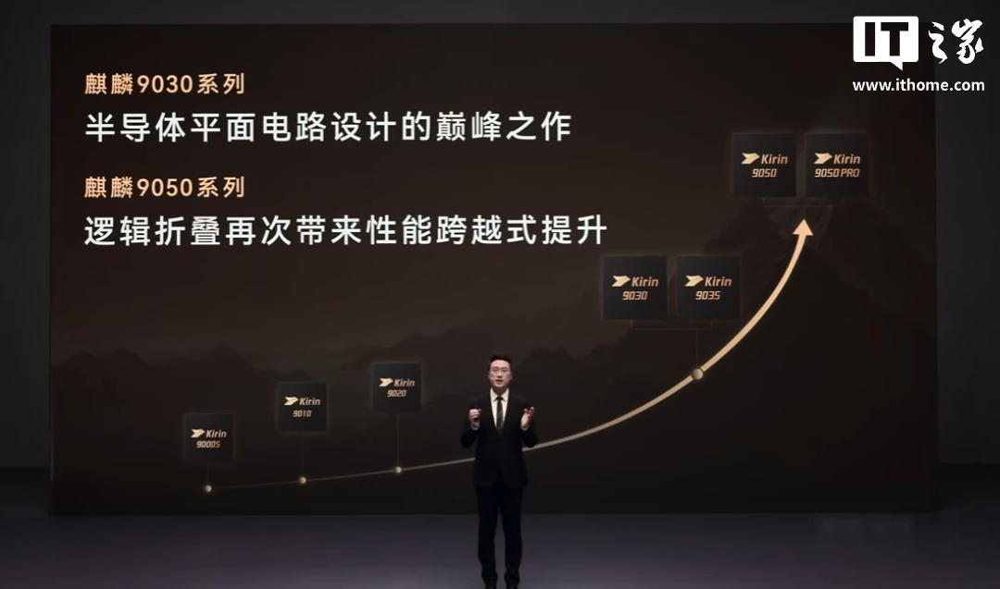
Huawei 허강, Mate 90 시리즈 스마트폰 10대 첨단 기술 중 τ 칩 공개, 로직 폴딩으로 성능 비약적 향상 다시 한번 달성
기술 돌파 + 완전한 복귀: Huawei, 오늘 Mate 90 시리즈 스마트폰 추가 발표 예정, 자체 개발 칩, 쿼드 SIM 트리플 스탠바이 등 10가지 첨단 기술 분석

Huawei Mate 90 Pro 시리즈 스마트폰 2세대 링롱 스크린 기술 공개: 듀얼 레이어 OLED 아키텍처, 기린 주작 듀얼 칩셋 지원

스마트폰 마지막 유리도 "쿤룬": Huawei Mate 90 Pro 시리즈, 광학 쿤룬 글라스 최초 적용으로 낙하 방지 기능 20% 향상
검색 결과가 없습니다
다른 검색어를 입력하거나 필터를 초기화해 보세요.